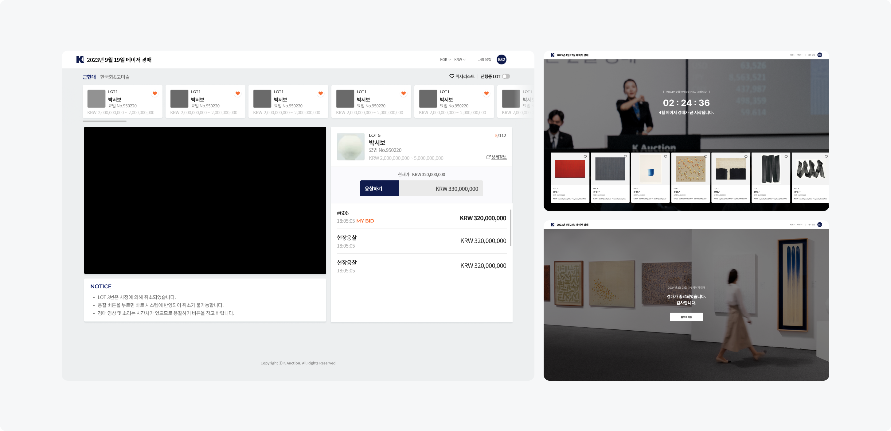
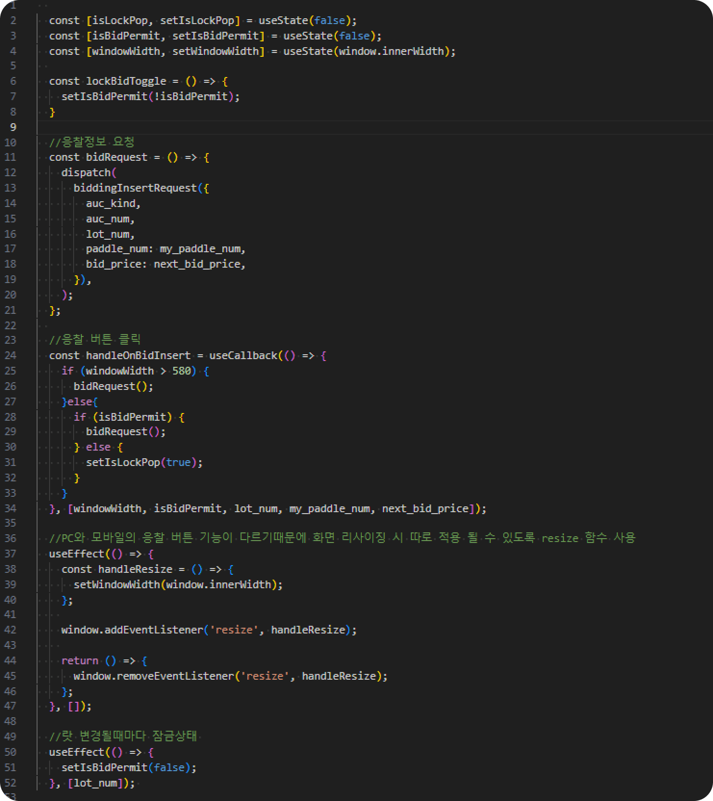
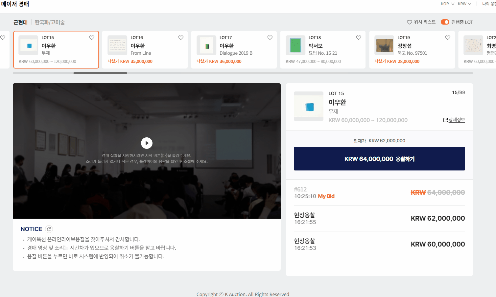
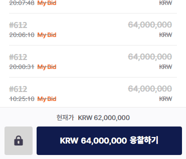
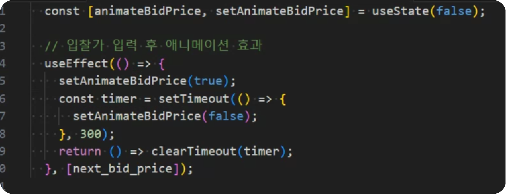
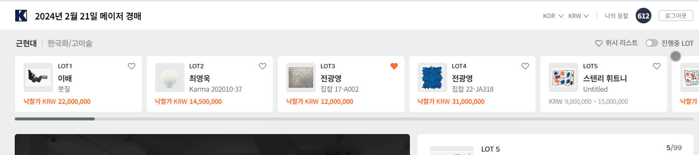
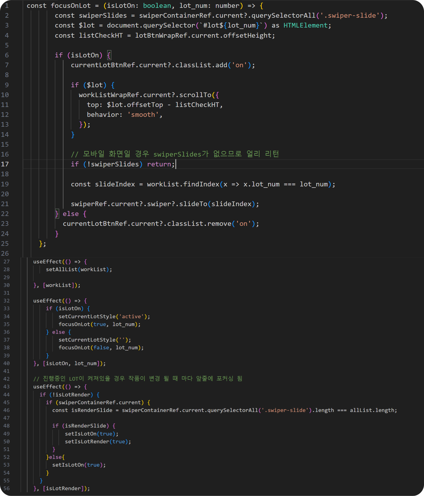

라이브 경매 리뉴얼
- Period
- 2024.05 - 2024.06
- Skill
- REACT, TYPESCRIPT, CSS
- Publishing, Front
- 100%
- Description
- 온라인에서 편리하게 실시간 경매를 참여하기 위한 웹 서비스 개발

Project Background
- ① PC환경에 최적화 되어있는 서비스 -> 모든 디바이스 환경 최적화 필요
- ② 응찰 버튼 실수로 클릭하는 상황 다수 -> 응찰 버튼 민감도 강화 필요

응찰버튼 Lock 기능
- ① 오응찰 하는 경우가 많아 이를 방지하기 위해 Lock 기능을 구현했습니다.
- ② useState 함수를 통해 lock 버튼이 비활성화된 경우 잠금 팝업 표시 여부와 입찰 가능 여부를 상태로 관리할 수 있도록 구현했습니다.
-
③ 해상도에 따라 응찰 정보 불러오는 방식을 다르게 해주었습니다.
- PC의 경우 응찰 Lock 기능이 없으므로, 모바일에서만 적용되도록 프로세스를 다르게 구현했습니다.
- ④ 화면 크기 변화를 감지하고 window.innerWidth 값을 가져올 수 있도록 useEffect 함수를 사용하여 구현했습니다.



응찰 금액 시각적 효과
- ① 응찰가가 변경되었을 때 시각적으로 강조되도록 깜빡이 기능을 구현했습니다.
-
② useEffect 상태
- 응찰 금액이 변경될 때마다 애니메이션이 실행되도록 구현
- 컴포넌트가 언마운트되거나 응찰가가 변경될 때 이전 타이머를 정리하기 위해 clearTimeout을 호출


작품 포커싱 기능
- ① 현재 진행 중인 경매 작품을 쉽게 확인할 수 있도록 포커싱 기능을 구현했습니다.
-
② useEffect 상태
- 작품이 변경될 때, LOT의 포커스와 스타일을 업데이트할 수 있도록 구현했습니다.
- 모바일의 경우 swiperSlides가 존재하지 않아 undefined 값이 될 수 있으므로, 이를 처리하기 위해 함수를 반환하도록 구현했습니다.